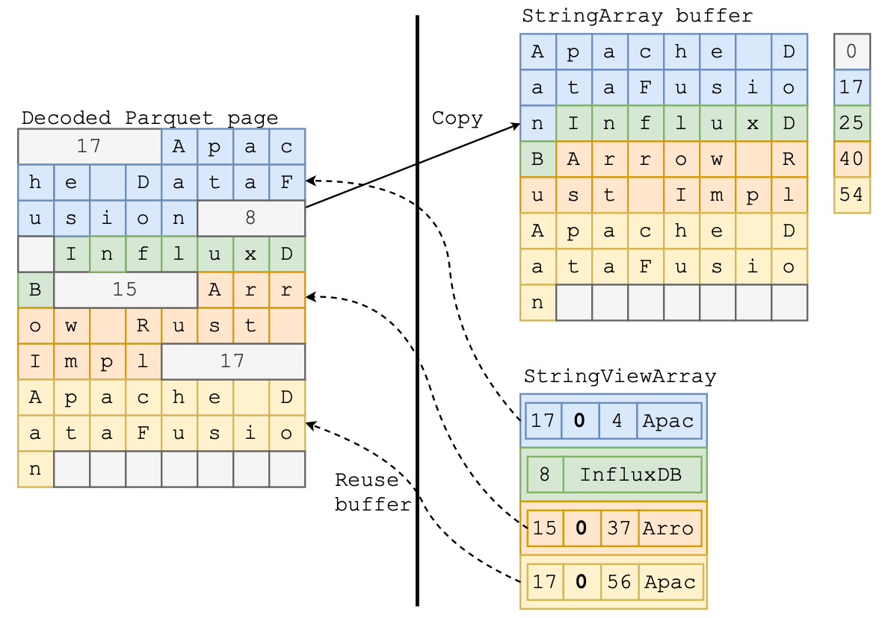
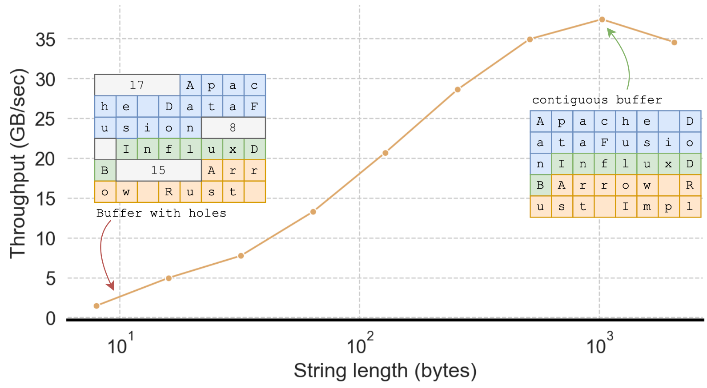
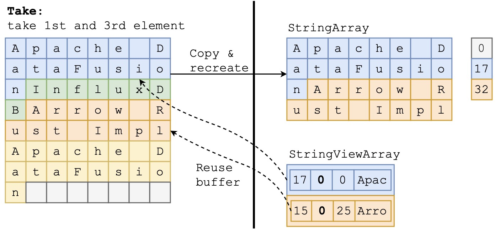
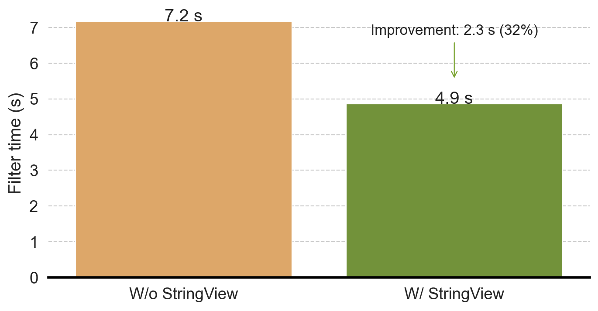

Editor note: This blog post is adapted from the InfluxData blog post series, make sure to also check out the original posts 1 2.
Note: Thanks to InfluxData for sponsoring this work as a summer intern project
This blog describes our experience implementing StringView in the Rust implementation of Apache Arrow, and integrating it into Apache DataFusion, significantly accelerating string-intensive queries in the ClickBench benchmark by 20%- 200% (Figure 11).
Getting significant end-to-end performance improvements was non-trivial. Implementing StringView itself was only a fraction of the effort required. Among other things, we had to optimize UTF-8 validation, implement unintuitive compiler optimizations, tune block sizes, and time GC to realize the FDAP ecosystem’s benefit. With other members of the open source community, we were able to overcome performance bottlenecks that could have killed the project. We would like to contribute by explaining the challenges and solutions in more detail so that more of the community can learn from our experience.
StringView is based on a simple idea: avoid some string copies and accelerate comparisons with inlined prefixes. Like most great ideas, it is “obvious” only after someone describes it clearly. Although simple, straightforward implementation actually slows down performance for almost every query. We must, therefore, apply astute observations and diligent engineering to realize the actual benefits from StringView.
Although this journey was successful, not all research ideas are as lucky. To accelerate the adoption of research into industry, it is valuable to integrate research prototypes with practical systems. Understanding the nuances of real-world systems makes it more likely that research designs will lead to practical system improvements.
StringView support was released as part of arrow-rs v52.2.0 and DataFusion v41.0.0. You can try it by setting the schema_force_string_view DataFusion configuration option, and we are hard at work with the community to make it the default. We invite everyone to try it out, take advantage of the effort invested so far, and contribute to making it better.

Section 1: What is StringView?
The concept of inlined strings with prefixes (called “German Strings” by Andy Pavlo, in homage to TUM, where the Umbra paper that describes them originated) has been used in many recent database systems (Velox, Polars, DuckDB, CedarDB, etc.) and was introduced to Arrow as a new StringViewArray2 type. Arrow’s original StringArray is very memory efficient but less effective for certain operations. StringViewArray accelerates string-intensive operations via prefix inlining and a more flexible and compact string representation.

A StringViewArray consists of three components:
- The
viewarray
- The buffers
- The buffer pointers (IDs) that map buffer offsets to their physical locations
Each view is 16 bytes long, and its contents differ based on the string’s length:
- string length < 12 bytes: the first four bytes store the string length, and the remaining 12 bytes store the inlined string.
- string length > 12 bytes: the string is stored in a separate buffer. The length is again stored in the first 4 bytes, followed by the buffer id (4 bytes), the buffer offset (4 bytes), and the prefix (first 4 bytes) of the string.
Figure 2 shows an example of the same logical content (left) using StringArray (middle) and StringViewArray (right):
- The first string –
“Apache DataFusion”– is 17 bytes long, and both StringArray and StringViewArray store the string’s bytes at the beginning of the buffer. The StringViewArray also inlines the first 4 bytes –“Apac”– in the view.
- The second string,
“InfluxDB”is only 8 bytes long, so StringViewArray completely inlines the string content in theviewstruct while StringArray stores the string in the buffer as well.
- The third string
“Arrow Rust Impl”is 15 bytes long and cannot be fully inlined. StringViewArray stores this in the same form as the first string.
- The last string
“Apache DataFusion”has the same content as the first string. It’s possible to use StringViewArray to avoid this duplication and reuse the bytes by pointing the view to the previous location.
StringViewArray provides three opportunities for outperforming StringArray:
- Less copying via the offset + buffer format
- Faster comparisons using the inlined string prefix
- Reusing repeated string values with the flexible
viewlayout
The rest of this blog post discusses how to apply these opportunities in real query scenarios to improve performance, what challenges we encountered along the way, and how we solved them.
Section 2: Faster Parquet Loading
Apache Parquet is the de facto format for storing large-scale analytical data commonly stored LakeHouse-style, such as Apache Iceberg and Delta Lake. Efficiently loading data from Parquet is thus critical to query performance in many important real-world workloads.
Parquet encodes strings (i.e., byte array) in a slightly different format than required for the original Arrow StringArray. The string length is encoded inline with the actual string data (as shown in Figure 4 left). As mentioned previously, StringArray requires the data buffer to be continuous and compact—the strings have to follow one after another. This requirement means that reading Parquet string data into an Arrow StringArray requires copying and consolidating the string bytes to a new buffer and tracking offsets in a separate array. Copying these strings is often wasteful. Typical queries filter out most data immediately after loading, so most of the copied data is quickly discarded.
On the other hand, reading Parquet data as a StringViewArray can re-use the same data buffer as storing the Parquet pages because StringViewArray does not require strings to be contiguous. For example, in Figure 4, the StringViewArray directly references the buffer with the decoded Parquet page. The string “Arrow Rust Impl” is represented by a view with offset 37 and length 15 into that buffer.

Mini benchmark
Reusing Parquet buffers is great in theory, but how much does saving a copy actually matter? We can run the following benchmark in arrow-rs to find out:
cargo bench --bench arrow_reader --features="arrow test_common experimental" "arrow_array_reader/Binary.*Array/plain encoded"Our benchmarking machine shows that loading BinaryViewArray is almost 2x faster than loading BinaryArray (see next section about why this isn’t StringViewArray).
arrow_array_reader/BinaryArray/plain encoded time: [315.86 µs 317.47 µs 319.00 µs]
arrow_array_reader/BinaryViewArray/plain encoded
time: [162.08 µs 162.20 µs 162.32 µs]You can read more on this arrow-rs issue: https://github.com/apache/arrow-rs/issues/5904
Section 2.1: From Binary to Strings
You may wonder why we reported performance for BinaryViewArray when this post is about StringViewArray. Surprisingly, initially, our implementation to read StringViewArray from Parquet was much slower than StringArray. Why? TLDR: Although reading StringViewArray copied less data, the initial implementation also spent much more time validating UTF-8 (as shown in Figure 5).
Strings are stored as byte sequences. When reading data from (potentially untrusted) Parquet files, a Parquet decoder must ensure those byte sequences are valid UTF-8 strings, and most programming languages, including Rust, include highly optimized routines for doing so.

A StringArray can be validated in a single call to the UTF-8 validation function as it has a continuous string buffer. As long as the underlying buffer is UTF-83, all strings in the array must be UTF-8. The Rust parquet reader makes a single function call to validate the entire buffer.
However, validating an arbitrary StringViewArray requires validating each string with a separate call to the validation function, as the underlying buffer may also contain non-string data (for example, the lengths in Parquet pages).
UTF-8 validation in Rust is highly optimized and favors longer strings (as shown in Figure 6), likely because it leverages SIMD instructions to perform parallel validation. The benefit of a single function call to validate UTF-8 over a function call for each string more than eliminates the advantage of avoiding the copy for StringViewArray.

Does this mean we should only use StringArray? No! Thankfully, there’s a clever way out. The key observation is that in many real-world datasets, 99% of strings are shorter than 128 bytes, meaning the encoded length values are smaller than 128, in which case the length itself is also valid UTF-8 (in fact, it is ASCII).
This observation means we can optimize validating UTF-8 strings in Parquet pages by treating the length bytes as part of a single large string as long as the length value is less than 128. Put another way, prior to this optimization, the length bytes act as string boundaries, which require a UTF-8 validation on each string. After this optimization, only those strings with lengths larger than 128 bytes (less than 1% of the strings in the ClickBench dataset) are string boundaries, significantly increasing the UTF-8 validation chunk size and thus improving performance.
The actual implementation is only nine lines of Rust (with 30 lines of comments). You can find more details in the related arrow-rs issue: https://github.com/apache/arrow-rs/issues/5995. As expected, with this optimization, loading StringViewArray is almost 2x faster than loading StringArray.
Section 2.2: Be Careful About Implicit Copies
After all the work to avoid copying strings when loading from Parquet, performance was still not as good as expected. We tracked the problem to a few implicit data copies that we weren’t aware of, as described in this issue.
The copies we eventually identified come from the following innocent-looking line of Rust code, where self.buf is a reference counted pointer that should transform without copying into a buffer for use in StringViewArray.
let block_id = output.append_block(self.buf.clone().into());However, Rust-type coercion rules favored a blanket implementation that did copy data. This implementation is shown in the following code block where the impl<T: AsRef<[u8]>> will accept any type that implements AsRef<[u8]> and copies the data to create a new buffer. To avoid copying, users need to explicitly call from_vec, which consumes the Vec and transforms it into a buffer.
impl<T: AsRef<[u8]>> From<T> for Buffer {
fn from(p: T) -> Self {
// copies data here
...
}
}
impl Buffer {
pub fn from_vec<T>(data: Vec<T>) -> Self {
// zero-copy transformation
...
}
}Diagnosing this implicit copy was time-consuming as it relied on subtle Rust language semantics. We needed to track every step of the data flow to ensure every copy was necessary. To help other users and prevent future mistakes, we also removed the implicit API from arrow-rs in favor of an explicit API. Using this approach, we found and fixed several other unintentional copies in the code base—hopefully, the change will help other downstream users avoid unnecessary copies.
Section 2.3: Help the Compiler by Giving it More Information
The Rust compiler’s automatic optimizations mostly work very well for a wide variety of use cases, but sometimes, it needs additional hints to generate the most efficient code. When profiling the performance of view construction, we found, counterintuitively, that constructing long strings was 10x faster than constructing short strings, which made short strings slower on StringViewArray than on StringArray!
As described in Section 1, StringViewArray treats long and short strings differently. Short strings (<12 bytes) directly inline to the view struct, while long strings only inline the first 4 bytes. The code to construct a view looks something like this:
if len <= 12 {
// Construct 16 byte view for short string
let mut view_buffer = [0; 16];
view_buffer[0..4].copy_from_slice(&len.to_le_bytes());
view_buffer[4..4 + data.len()].copy_from_slice(data);
...
} else {
// Construct 16 byte view for long string
ByteView {
length: len,
prefix: u32::from_le_bytes(data[0..4].try_into().unwrap()),
buffer_index: block_id,
offset,
}
}It appears that both branches of the code should be fast: they both involve copying at most 16 bytes of data and some memory shift/store operations. How could the branch for short strings be 10x slower?
Looking at the assembly code using godbolt, we (with help from Ao Li) found the compiler used CPU load instructions to copy the fixed-sized 4 bytes to the view for long strings, but it calls a function, ptr::copy_non_overlapping, to copy the inlined bytes to the view for short strings. The difference is that long strings have a prefix size (4 bytes) known at compile time, so the compiler directly uses efficient CPU instructions. But, since the size of the short string is unknown to the compiler, it has to call the general-purpose function ptr::copy_non_coverlapping. Making a function call is significant unnecessary overhead compared to a CPU copy instruction.
However, we know something the compiler doesn’t know: the short string size is not arbitrary—it must be between 0 and 12 bytes, and we can leverage this information to avoid the function call. Our solution generates 13 copies of the function using generics, one for each of the possible prefix lengths. The code looks as follows, and checking the assembly code, we confirmed there are no calls to ptr::copy_non_overlapping, and only native CPU instructions are used. For more details, see the ticket.
fn make_inlined_view<const LEN: usize>(data: &[u8]) -> u128 {
let mut view_buffer = [0; 16];
view_buffer[0..4].copy_from_slice(&(LEN as u32).to_le_bytes());
view_buffer[4..4 + LEN].copy_from_slice(&data[..LEN]);
u128::from_le_bytes(view_buffer)
}
pub fn make_view(data: &[u8], block_id: u32, offset: u32) -> u128 {
let len = data.len();
// generate special code for each of the 13 possible lengths
match len {
0 => make_inlined_view::<0>(data),
1 => make_inlined_view::<1>(data),
2 => make_inlined_view::<2>(data),
3 => make_inlined_view::<3>(data),
4 => make_inlined_view::<4>(data),
5 => make_inlined_view::<5>(data),
6 => make_inlined_view::<6>(data),
7 => make_inlined_view::<7>(data),
8 => make_inlined_view::<8>(data),
9 => make_inlined_view::<9>(data),
10 => make_inlined_view::<10>(data),
11 => make_inlined_view::<11>(data),
12 => make_inlined_view::<12>(data),
_ => {
// handle long string
}}}Section 2.4: End-to-End Query Performance
In the previous sections, we went out of our way to make sure loading StringViewArray is faster than StringArray. Before going further, we wanted to verify if obsessing about reducing copies and function calls has actually improved end-to-end performance in real-life queries. To do this, we evaluated a ClickBench query (Q20) in DataFusion that counts how many URLs contain the word "google":
SELECT COUNT(*) FROM hits WHERE "URL" LIKE '%google%';This is a relatively simple query; most of the time is spent on loading the “URL” column to find matching rows. The query plan looks like this:
Projection: COUNT(*) [COUNT(*):Int64;N]
Aggregate: groupBy=[[]], aggr=[[COUNT(*)]] [COUNT(*):Int64;N]
Filter: hits.URL LIKE Utf8("%google%")
TableScan: hits We ran the benchmark in the DataFusion repo like this:
cargo run --profile release-nonlto --bin dfbench -- clickbench --queries-path benchmarks/queries/clickbench/queries.sql --iterations 3 --query 20 --path benchmarks/data/hits.parquet --string-viewWith StringViewArray we saw a 24% end-to-end performance improvement, as shown in Figure 7. With the --string-view argument, the end-to-end query time is 944.3 ms, 869.6 ms, 861.9 ms (three iterations). Without --string-view, the end-to-end query time is 1186.1 ms, 1126.1 ms, 1138.3 ms.

We also double-checked with detailed profiling and verified that the time reduction is indeed due to faster Parquet loading.
Section 3: Faster String Operations
We have discussed the nuances required to accelerate Parquet loading using StringViewArray by reusing buffers and reducing copies. In this second part of the post, we describe the rest of the journey: implementing additional efficient operations for real query processing.
Section 3.1: Faster comparison
String comparison is ubiquitous; it is the core of cmp, min/max, and like/ilike kernels. StringViewArray is designed to accelerate such comparisons using the inlined prefix—the key observation is that, in many cases, only the first few bytes of the string determine the string comparison results.
For example, to compare the strings InfluxDB with Apache DataFusion, we only need to look at the first byte to determine the string ordering or equality. In this case, since A is earlier in the alphabet than I, Apache DataFusion sorts first, and we know the strings are not equal. Despite only needing the first byte, comparing these strings when stored as a StringArray requires two memory accesses: 1) load the string offset and 2) use the offset to locate the string bytes. For low-level operations such as cmp that are invoked millions of times in the very hot paths of queries, avoiding this extra memory access can make a measurable difference in query performance.
For StringViewArray, typically, only one memory access is needed to load the view struct. Only if the result can not be determined from the prefix is the second memory access required. For the example above, there is no need for the second access. This technique is very effective in practice: the second access is never necessary for the more than 60% of real-world strings which are shorter than 12 bytes, as they are stored completely in the prefix.
However, functions that operate on strings must be specialized to take advantage of the inlined prefix. In addition to low-level comparison kernels, we implemented a wide range of other StringViewArray operations that cover the functions and operations seen in ClickBench queries. Supporting StringViewArray in all string operations takes quite a bit of effort, and thankfully the Arrow and DataFusion communities are already hard at work doing so (see https://github.com/apache/datafusion/issues/11752 if you want to help out).
Section 3.2: Faster take and filter
After a filter operation such as WHERE url <> ‘’ to avoid processing empty urls, DataFusion will often coalesce results to form a new array with only the passing elements. This coalescing ensures the batches are sufficiently sized to benefit from vectorized processing in subsequent steps.
The coalescing operation is implemented using the take and filter kernels in arrow-rs. For StringArray, these kernels require copying the string contents to a new buffer without “holes” in between. This copy can be expensive especially when the new array is large.
However, take and filter for StringViewArray can avoid the copy by reusing buffers from the old array. The kernels only need to create a new list of views that point at the same strings within the old buffers. Figure 8 illustrates the difference between the output of both string representations. StringArray creates two new strings at offsets 0-17 and 17-32, while StringViewArray simply points to the original buffer at offsets 0 and 25.

Section 3.3: When to GC?
Zero-copy take/filter is great for generating large arrays quickly, but it is suboptimal for highly selective filters, where most of the strings are filtered out. When the cardinality drops, StringViewArray buffers become sparse—only a small subset of the bytes in the buffer’s memory are referred to by any view. This leads to excessive memory usage, especially in a filter-then-coalesce scenario. For example, a StringViewArray with 10M strings may only refer to 1M strings after some filter operations; however, due to zero-copy take/filter, the (reused) 10M buffers can not be released/reused.
To release unused memory, we implemented a garbage collection (GC) routine to consolidate the data into a new buffer to release the old sparse buffer(s). As the GC operation copies strings, similarly to StringArray, we must be careful about when to call it. If we call GC too early, we cause unnecessary copying, losing much of the benefit of StringViewArray. If we call GC too late, we hold large buffers for too long, increasing memory use and decreasing cache efficiency. The Polars blog on StringView also refers to the challenge presented by garbage collection timing.
arrow-rs implements the GC process, but it is up to users to decide when to call it. We leverage the semantics of the query engine and observed that the CoalseceBatchesExec operator, which merge smaller batches to a larger batch, is often used after the record cardinality is expected to shrink, which aligns perfectly with the scenario of GC in StringViewArray. We, therefore, implemented the GC procedure inside CoalseceBatchesExec[^5],with a heuristic that estimates when the buffers are too sparse.
Section 3.4: The art of function inlining: not too much, not too little
Like string inlining, function inlining is the process of embedding a short function into the caller to avoid the overhead of function calls (caller/callee save). Usually, the Rust compiler does a good job of deciding when to inline. However, it is possible to override its default using the #[inline(always)] directive. In performance-critical code, inlined code allows us to organize large functions into smaller ones without paying the runtime cost of function invocation.
However, function inlining is not always better, as it leads to larger function bodies that are harder for LLVM to optimize (for example, suboptimal register spilling) and risk overflowing the CPU’s instruction cache. We observed several performance regressions where function inlining caused slower performance when implementing the StringViewArray comparison kernels. Careful inspection and tuning of the code was required to aid the compiler in generating efficient code. More details can be found in this PR: https://github.com/apache/arrow-rs/pull/5900.
Section 3.5: Buffer size tuning
StringViewArray permits multiple buffers, which enables a flexible buffer layout and potentially reduces the need to copy data. However, a large number of buffers slows down the performance of other operations. For example, get_array_memory_size() needs to sum the memory size of each buffer, which takes a long time with thousands of small buffers. In certain cases, we found that multiple calls to concat_batches lead to arrays with millions of buffers, which was prohibitively expensive.
For example, consider a StringViewArray with the previous default buffer size of 8 KB. With this configuration, holding 4GB of string data requires almost half a million buffers! Larger buffer sizes are needed for larger arrays, but we cannot arbitrarily increase the default buffer size, as small arrays would consume too much memory (most arrays require at least one buffer). Buffer sizing is especially problematic in query processing, as we often need to construct small batches of string arrays, and the sizes are unknown at planning time.
To balance the buffer size trade-off, we again leverage the query processing (DataFusion) semantics to decide when to use larger buffers. While coalescing batches, we combine multiple small string arrays and set a smaller buffer size to keep the total memory consumption low. In string aggregation, we aggregate over an entire Datafusion partition, which can generate a large number of strings, so we set a larger buffer size (2MB).
To assist situations where the semantics are unknown, we also implemented a classic dynamic exponential buffer size growth strategy, which starts with a small buffer size (8KB) and doubles the size of each new buffer up to 2MB. We implemented this strategy in arrow-rs and enabled it by default so that other users of StringViewArray can also benefit from this optimization. See this issue for more details: https://github.com/apache/arrow-rs/issues/6094.
Section 3.6: End-to-end query performance
We have made significant progress in optimizing StringViewArray filtering operations. Now, let’s test it in the real world to see how it works!
Let’s consider ClickBench query 22, which selects multiple string fields (URL, Title, and SearchPhase) and applies several filters.
SELECT
"SearchPhrase",
MIN("URL"), MIN("Title"), COUNT(*) AS c, COUNT(DISTINCT "UserID")
FROM hits
WHERE
"Title" LIKE '%Google%' AND
"URL" NOT LIKE '%.google.%' AND
"SearchPhrase" <> ''
GROUP BY "SearchPhrase"
ORDER BY c DESC
LIMIT 10;We ran the benchmark using the following command in the DataFusion repo. Again, the --string-view option means we use StringViewArray instead of StringArray.
cargo run --profile release-nonlto --bin dfbench -- clickbench --queries-path benchmarks/queries/clickbench/queries.sql --iterations 3 --query 22 --path benchmarks/data/hits.parquet --string-viewTo eliminate the impact of the faster Parquet reading using StringViewArray (see the first part of this blog), Figure 9 plots only the time spent in FilterExec. Without StringViewArray, the filter takes 7.17s; with StringViewArray, the filter only takes 4.86s, a 32% reduction in time. Moreover, we see a 17% improvement in end-to-end query performance.

Section 4: Faster String Aggregation
So far, we have discussed how to exploit two StringViewArray features: reduced copy and faster filtering. This section focuses on reusing string bytes to repeat string values.
As described in part one of this blog, if two strings have identical values, StringViewArray can use two different views pointing at the same buffer range, thus avoiding repeating the string bytes in the buffer. This makes StringViewArray similar to an Arrow DictionaryArray that stores Strings—both array types work well for strings with only a few distinct values.
Deduplicating string values can significantly reduce memory consumption in StringViewArray. However, this process is expensive and involves hashing every string and maintaining a hash table, and so it cannot be done by default when creating a StringViewArray. We introduced an opt-in string deduplication mode in arrow-rs for advanced users who know their data has a small number of distinct values, and where the benefits of reduced memory consumption outweigh the additional overhead of array construction.
Once again, we leverage DataFusion query semantics to identify StringViewArray with duplicate values, such as aggregation queries with multiple group keys. For example, some ClickBench queries group by two columns:
UserID(an integer with close to 1 M distinct values)
MobilePhoneModel(a string with less than a hundred distinct values)
In this case, the output row count is count(distinct UserID) * count(distinct MobilePhoneModel), which is 100M. Each string value of MobilePhoneModel is repeated 1M times. With StringViewArray, we can save space by pointing the repeating values to the same underlying buffer.
Faster string aggregation with StringView is part of a larger project to improve DataFusion aggregation performance. We have a proof of concept implementation with StringView that can improve the multi-column string aggregation by 20%. We would love your help to get it production ready!
Section 5: StringView Pitfalls
Most existing blog posts (including this one) focus on the benefits of using StringViewArray over other string representations such as StringArray. As we have discussed, even though it requires a significant engineering investment to realize, StringViewArray is a major improvement over StringArray in many cases.
However, there are several cases where StringViewArray is slower than StringArray. For completeness, we have listed those instances here:
- Tiny strings (when strings are shorter than 8 bytes): every element of the StringViewArray consumes at least 16 bytes of memory—the size of the
viewstruct. For an array of tiny strings, StringViewArray consumes more memory than StringArray and thus can cause slower performance due to additional memory pressure on the CPU cache.
- Many repeated short strings: Similar to the first point, StringViewArray can be slower and require more memory than a DictionaryArray because 1) it can only reuse the bytes in the buffer when the strings are longer than 12 bytes and 2) 32-bit offsets are always used, even when a smaller size (8 bit or 16 bit) could represent all the distinct values.
- Filtering: As we mentioned above, StringViewArrays often consume more memory than the corresponding StringArray, and memory bloat quickly dominates the performance without GC. However, invoking GC also reduces the benefits of less copying so must be carefully tuned.
Section 6: Conclusion and Takeaways
In these two blog posts, we discussed what it takes to implement StringViewArray in arrow-rs and then integrate it into DataFusion. Our evaluations on ClickBench queries show that StringView can improve the performance of string-intensive workloads by up to 2x.
Given that DataFusion already performs very well on ClickBench, the level of end-to-end performance improvement using StringViewArray shows the power of this technique and, of course, is a win for DataFusion and the systems that build upon it.
StringView is a big project that has received tremendous community support. Specifically, we would like to thank @tustvold, @ariesdevil, @RinChanNOWWW, @ClSlaid, @2010YOUY01, @chloro-pn, @a10y, @Kev1n8, @Weijun-H, @PsiACE, @tshauck, and @xinlifoobar for their valuable contributions!
As the introduction states, “German Style Strings” is a relatively straightforward research idea that avoid some string copies and accelerates comparisons. However, applying this (great) idea in practice requires a significant investment in careful software engineering. Again, we encourage the research community to continue to help apply research ideas to industrial systems, such as DataFusion, as doing so provides valuable perspectives when evaluating future research questions for the greatest potential impact.
Footnotes
Benchmarked with AMD Ryzen 7600x (12 core, 24 threads, 32 MiB L3), WD Black SN770 NVMe SSD (5150MB/4950MB seq RW bandwidth)↩︎
There is also a corresponding BinaryViewArray which is similar except that the data is not constrained to be UTF-8 encoded strings.↩︎
We also make sure that offsets do not break a UTF-8 code point, which is cheaply validated.↩︎